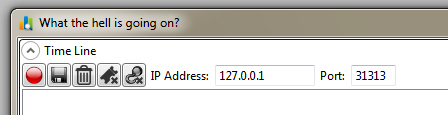
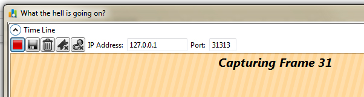
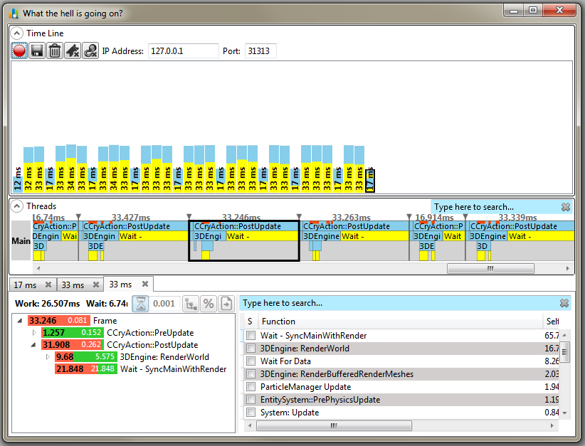
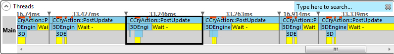
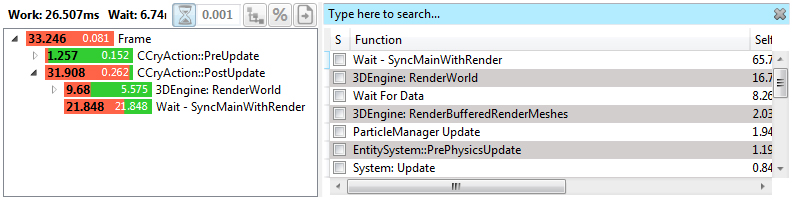
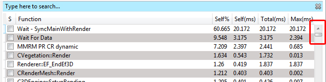
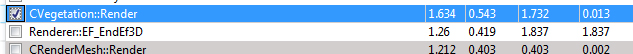
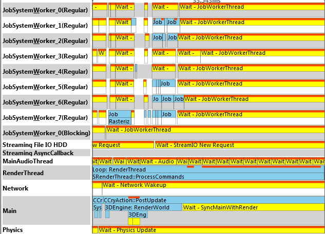

Overview
Brofiler is an external profiling tool developed by Vadim Slyusarev. The Author describes the tool as a "Super Lightweight C++ Profiler for Games". While other profilers often can come with a huge overhead, Brofiler focuses on finding the most expensive functions. In combination with Statoscope bottlenecks can be pinpointed from a high level perspective.
Please refer to the Author's tutorial. Please note, that you do not have to set your own markers - we have already placed various markers in the Engine code.
Chapters:
1. Getting Started
- Launch the game from your disk and open a Level. Note: do not run the instance from Visual Studio. Launch Brofiler, which is located in Tools/Brofiler of your CRYENGINE installation directory:

- Press the Record
button to start capturing an image - After a few frames have been captured, press the Stop
button: 
- You will get a hierarchical profile capture similar to the screenshot below:

2. Getting an Overview
The threads panel gives a general overview of what is going on in the main thread. Labels have been added as so called Regions inside CRYENGINE. These are high-level labels or very important labels and are always collected:
- Light blue = busy time
- Yellow = waiting time

Below the threads panel you get a listed overview of the Regions which are sorted by the lifetime of the label:

3. Deep Analysis
Regions can be helpful in getting a first impression of what is going on. If you want to track all labels in CRYENGINE, then you can enable this by setting with the CVar:
profile_deep = 1After recording again, you will recognize that the list of labels is now much longer than before:

4. Sampling Inside Labels
In the previous step you learned how to track all the labels of CRYENGINE on the main thread. If you are interested in what is actually going on inside one of those labels, then you can get an estimation by performing sampling:

The longer you sample, then the more precise your result will be. Stop recording by pressing the Stop
If you want to disable sampling, for example you want to take another frame capture, then you should remove the current sampling flags by pressing the
5. Profiling all Threads
So, you have learned how to profile the main thread. If you need more information about what is going on with other threads, then enable all thread(s) profiling with the use of the following CVar:
profile_allthreads = 1
Sampling is not currently supported for threads that occur outside of Main.
Troubleshooting
Problem: Brofiler is connecting and collecting frames, but no labels are displayed.
Solution: Make sure you tell the Engine where a frame starts in your game code. This should usually be added to CGameStartup::Update
int CGameStartup::Update(bool haveFocus, unsigned int updateFlags)
{
CRY_PROFILE_FRAMESTART("Main");
...
}Problem: Connecting with Brofiler freezes CRYENGINE.
Solution: Do not run CRYENGINE from Visual Studio when you want to use Brofiler. Instead call the executable directly from the disk.
Problem: Brofiler Hooking mode does not seem to change anything.
Solution: EasyHook is currently not supported by CRYENGINE.